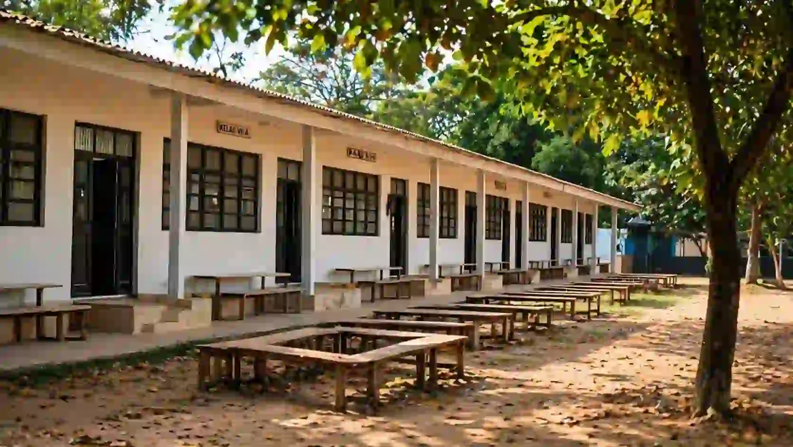

Infrastruktur pendidikan di Jember masih menghadapi tantangan berat, mulai dari jalan rusak di pelosok desa hingga ratusan gedung sekolah yang perlu diperbaiki, namun pemerintah daerah dan pusat mulai bergerak nyata.

Tantangan akses jalan menuju sekolah di wilayah pedesaan Kabupaten Jember.
Sumber: ---Pernah terbayang nggak, berangkat sekolah bukan dari halte bus atau depan gerbang perumahan, tapi dari tepian sawah, melewati jalan tanah berlumpur, menyeberangi kali kecil, lalu baru sampai ke kelas? Itu bukan cerita masa lalu. Itu kenyataan yang masih dialami banyak anak di pelosok Kabupaten Jember hari ini.
Pendidikan di Jember punya dua wajah. Wajah pertama adalah kota yang ramai dengan universitas, festival budaya, dan kafe kekinian. Wajah kedua adalah desa-desa di pinggiran yang anak-anaknya harus berjuang keras hanya untuk sampai ke sekolah. Tapi ada kabar baik di balik semua itu. Pemerintah tidak tinggal diam. Perubahan memang tidak datang semalaman, tapi gerakannya sudah terasa.
Seberapa Parah Kondisi Infrastruktur Pendidikan di Desa Jember?
Bayangkan kamu seorang siswa SD di salah satu desa di Kecamatan Sumberjambe atau Umbulsari. Seragam sudah rapi, tas sudah terpasang di punggung. Tapi jalan yang harus dilalui masih penuh lubang, berlumpur saat hujan, dan berdebu saat kemarau.
Ambruknya jembatan gantung yang menghubungkan Dusun Darungan Selatan dan Darungan Utara, Desa Jubung, Kecamatan Sukorambi, nyatanya langsung berdampak luas dan dikhawatirkan memicu anak putus sekolah. Kondisi gedung sekolah pun tak kalah memprihatinkan. Data di Dapodik mencatat ada 400-an gedung dan kelas yang rusak, mencakup PAUD, TK, SD, dan SMP, dengan kerusakan terbanyak ada di lembaga pendidikan SD.
Apa yang Sudah Dilakukan Pemerintah Jember?
1. Jalan Desa Mulai Dibenahi
Pemerintah Kabupaten Jember di bawah kepemimpinan Bupati Gus Fawait tidak menyerah. Di Desa Manggisan, warga menyampaikan terima kasih karena jalan yang sudah diukur sejak 2024 akhirnya benar-benar diaspal pada 2025. Jalur ini bukan hanya sekadar akses antar wilayah, tapi juga menjadi nadi pendidikan.
2. Program Sekolah Rakyat
Pemerintah Kelurahan Kranjingan melaksanakan kunjungan ke Sekolah Rakyat Terintegrasi 6 Jember sebagai bentuk perhatian terhadap warga yang menempuh pendidikan melalui program pemerintah pusat tersebut. Ini merupakan program nasional yang digagas Presiden Prabowo untuk memperluas akses pendidikan.
3. Revitalisasi Sekolah
Pada tahun 2025, Kabupaten Jember memperoleh alokasi revitalisasi terbesar dalam sejarahnya, dengan 124 sekolah mendapatkan bantuan perbaikan. Pemerintah telah mengalokasikan anggaran besar untuk program revitalisasi pada tahun 2026, dengan fokus pada sekolah rusak berat.
Kenapa Infrastruktur Jalan Itu Kunci Pendidikan?
Bupati Jember Gus Fawait pernah menegaskan bahwa pendidikan adalah jalan jangka panjang untuk mengentaskan kemiskinan. Coba pikirkan begini: Seorang anak di desa terpencil yang tiap hari harus berjalan kaki satu jam melewati jalan rusak, apa yang terjadi saat musim hujan tiba? Lama-lama, motivasi akan melemah dan akhirnya putus sekolah jadi jalan keluar yang paling mudah. Itulah kenapa jalan bukan sekadar soal aspal, tapi urat nadi pendidikan.
"Pendidikan adalah jalan jangka panjang untuk mengentaskan kemiskinan di Kabupaten Jember. Setiap aspal yang terhampar adalah harapan bagi masa depan anak bangsa."
FAQ Pendidikan di Jember
1. Berapa banyak sekolah yang rusak di Kabupaten Jember?
Per tahun 2024, data Dapodik mencatat sekitar 400-an gedung dan kelas yang rusak mencakup PAUD, TK, SD, dan SMP.
2. Apa saja program pemerintah untuk memperbaiki akses ini?
Perbaikan jalan desa oleh DPUBMSDA, revitalisasi sekolah dari anggaran pusat, dan Program Sekolah Rakyat Terintegrasi.
3. Berapa sekolah yang mendapat revitalisasi di tahun 2025?
Sebanyak 124 sekolah mendapatkan bantuan perbaikan dari pemerintah pusat, alokasi terbesar dalam sejarah Jember.
Sumber: radarjember.jawapos.com, ppid.jemberkab.go.id, jatimnow.com, kemendikdasmen.go.id.